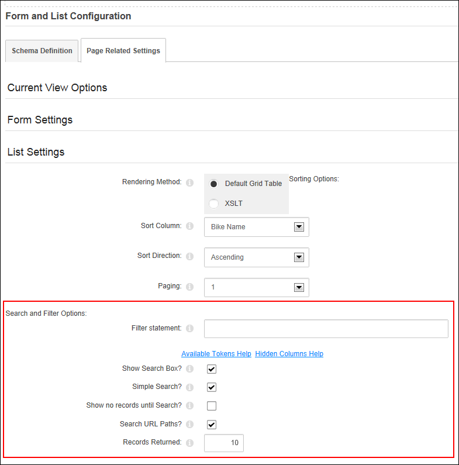

Setting List Search and Filter Options
How to set the list searching and filtering options for the Forms and Lists module.
- Select
 Form and List Configuration from the module actions menu.
Form and List Configuration from the module actions menu.
- Expand the List Settings section.
- Go to the Search and Filter Options section.
- In the Filter Statement text box, enter a Boolean filter expression which a record must match to be displayed. Use SQL syntax with WHERE clauses. If your column name has spaces or special characters in it, surround the field name with [brackets]. Tip: Click the Available Tokens Help or Hidden Columns Help buttons for a list of available tokens or hidden column details.
- At Show Search Box, select from these options:
- Mark
 the check box display a search box which enables users to search the data within any searchable column. Searches can be made on all or one column and can be set to Contain, Start With, End With, or Equal the search criteria. Checking this option enables the following optional settings:
the check box display a search box which enables users to search the data within any searchable column. Searches can be made on all or one column and can be set to Contain, Start With, End With, or Equal the search criteria. Checking this option enables the following optional settings:- Optional. At Simple Search, to use a simple search box - OR - to use the standard Search Box.
- Optional. At Show No Records Until Search, to hide all records until a successful search has been made - OR - to display records by default.
- Optional. At Search URL Paths, to include URL paths in search results - OR - to disable.
- Unmark
 the check box to disable the search box.
the check box to disable the search box.
- In the Records Returned text box, enter a number between 1 and 1000 to set the maximum number of records displayed according to the sorting applied. Leave this field blank to return an unlimited number of records.
- Click the Save Configuration and Return link.

Enabling the list search box

List displaying the results of a Simple Search